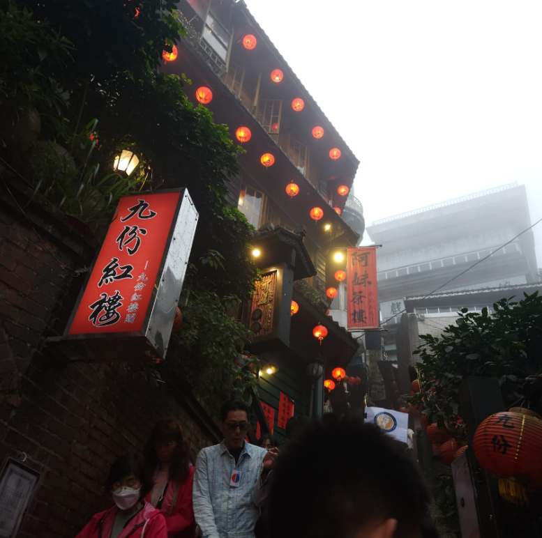
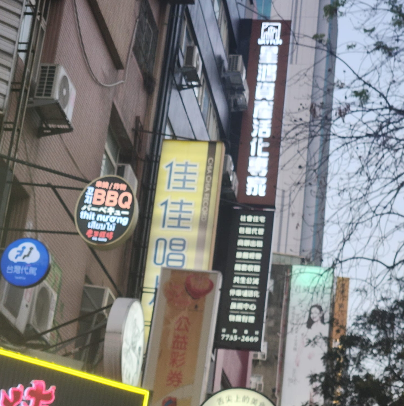

Hualien, di Taiwan, memiliki sejarah peradaban yang kaya dan unik. Wilayah ini awalnya dihuni oleh berbagai suku asli Taiwan, yang hingga kini masih memiliki pengaruh besar terhadap budaya lokal. Hualien adalah salah satu daerah dengan populasi penduduk asli terbesar di Taiwan, dan ini tercermin dalam makanan, seni, serta festival tradisional mereka.
Hualien juga dikenal karena keindahan alamnya yang dramatis, seperti pegunungan, pantai, dan lembah yang memukau. Wilayah ini menjadi pusat kegiatan luar ruangan seperti hiking, bersepeda, dan eksplorasi alam.
Selain itu, Hualien juga memiliki sejarah kolonial yang menarik. Nama "Hualien" sendiri berasal dari kata Jepang "Karen," yang diberikan selama masa penjajahan Jepang. Pada masa itu, Jepang mengembangkan beberapa infrastruktur penting di wilayah ini, termasuk Taman Nasional Taroko Gorge, yang kini menjadi salah satu daya tarik utama.
